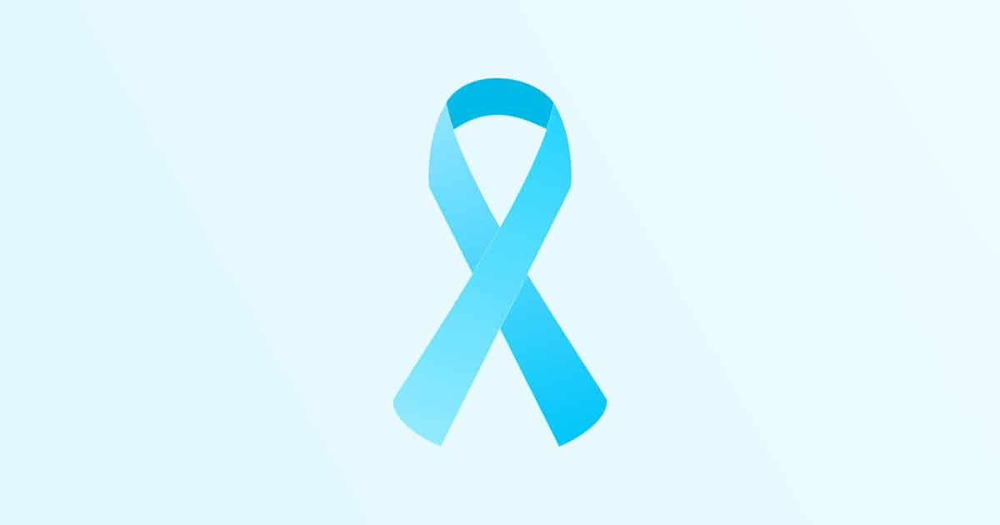

Mês de conscientização sobre a saúde do homem
Iniciado em 2011 pelo Instituto Lado a Lado pela Vida, a campanha "novembro azul" tem o objetivo de alertar para a importância do diagnóstico precoce do câncer de próstata, o mais frequente entre os homens brasileiros, atrás apenas do câncer de pele.